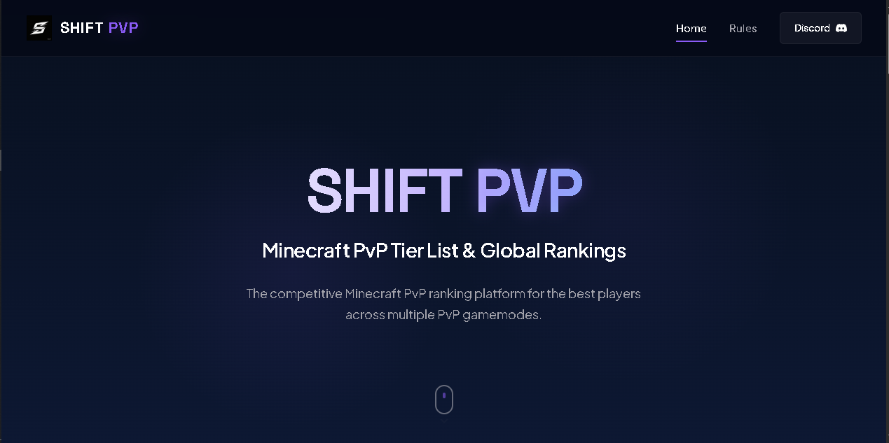
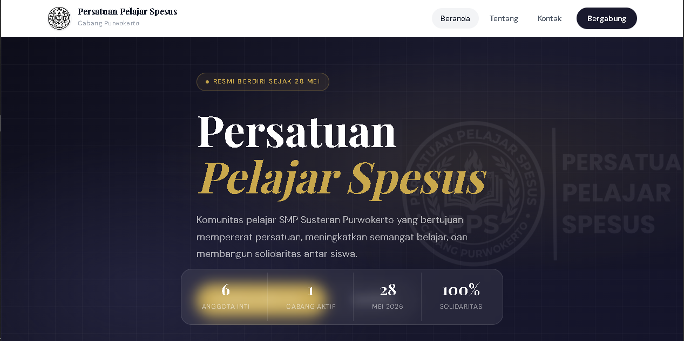
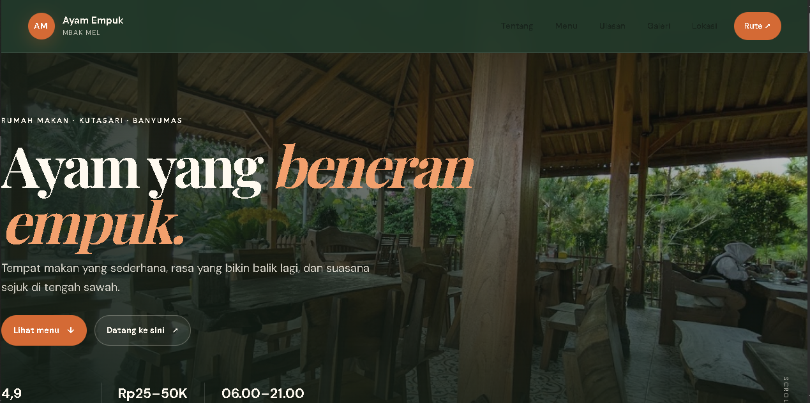
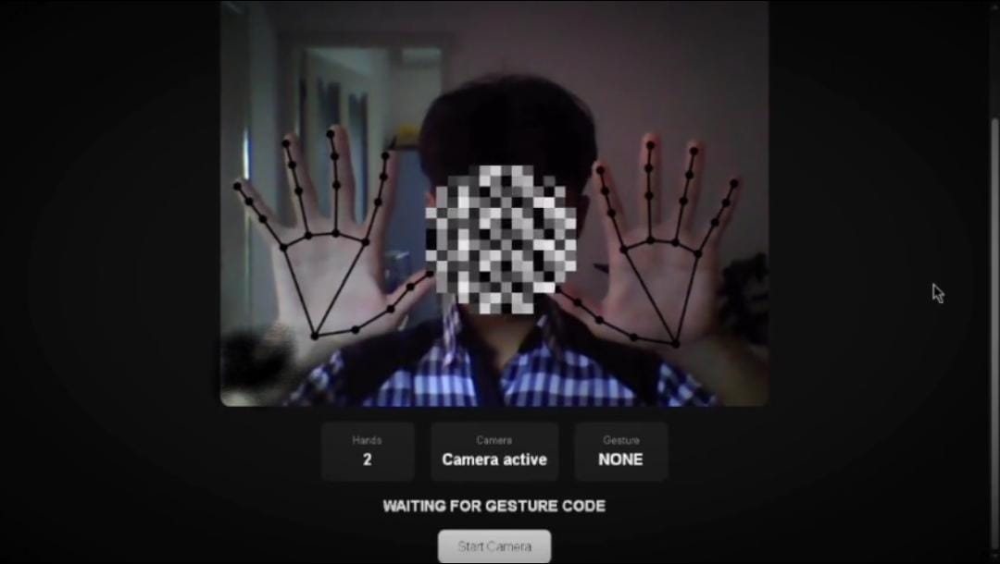
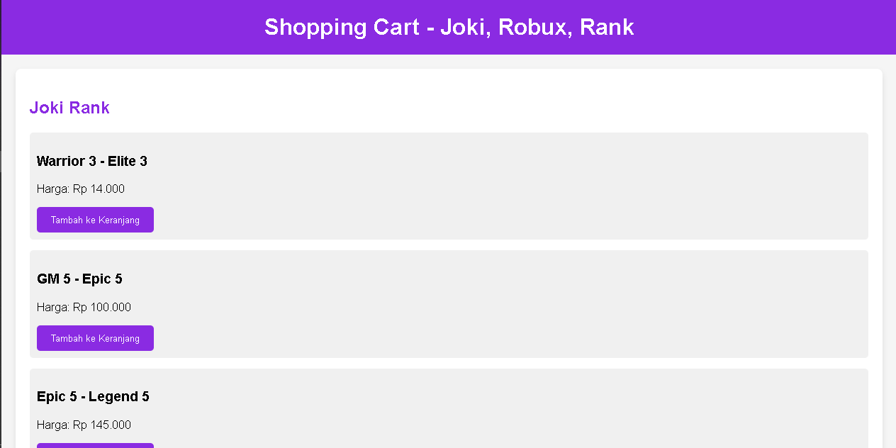
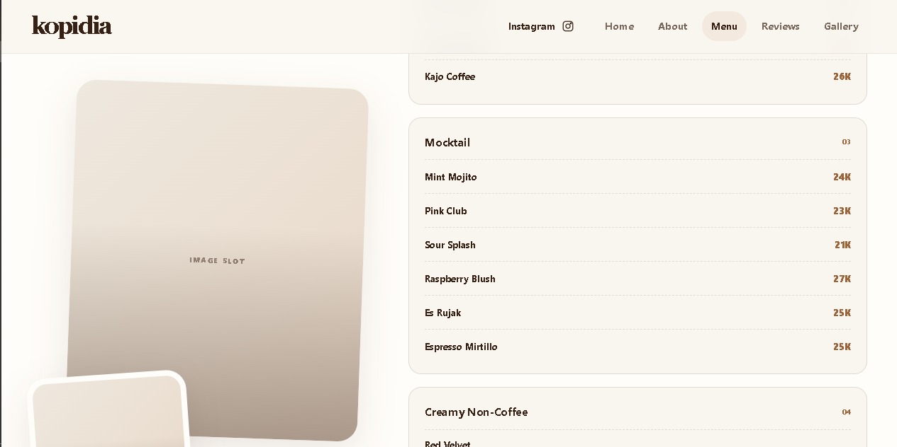
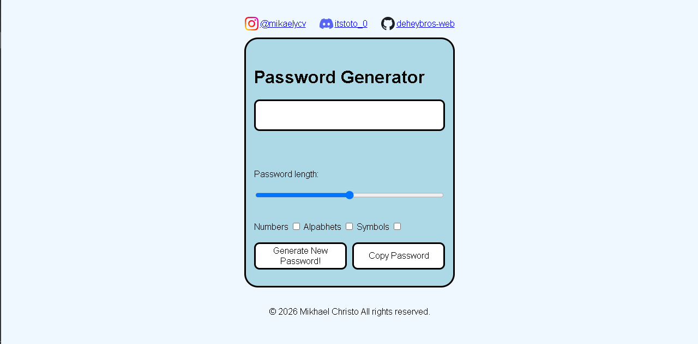
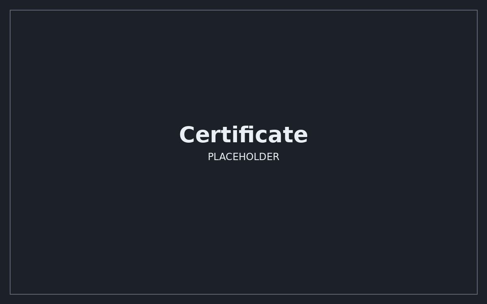

Mikhael Yehoshua Christo Vianest
Developer in progress · Student · Builder
“Let's turn habits and hobbies into the future.”
Front-End Web Developer focused on building responsive, interactive websites using HTML, CSS, and Vanilla JavaScript, with hands-on experience in DOM manipulation and dynamic web functionality.
A curious learner who turns ideas, habits, and small experiments into practical web experiences.
I enjoy turning ideas into interfaces that feel clear, useful, and enjoyable to explore.
I specialize in building responsive and interactive web interfaces using HTML, CSS, and Vanilla JavaScript. My focus is on DOM manipulation, event-driven interactions, dynamic content rendering, and client-side functionality. I develop practical web projects with a strong emphasis on interface structure, user experience, and clean, maintainable code. I am also expanding my knowledge of backend development to build more complete web applications.
Developer in progress · Student · Builder
Sleman, Indonesia
27 December 2011
Building small web projects, exploring interface ideas, and learning new development concepts through hands-on practice.
My approach: learn the fundamentals, build something real, understand what went wrong, and improve it one iteration at a time.
Current focus: responsive layouts, DOM manipulation, event-driven interactions, dynamic content, and client-side functionality.
Exploring server-side fundamentals, APIs, databases, authentication, and how full-stack applications work together.
Small builds that show what I’ve been learning.

01A Minecraft PvP community platform for players, tiering, and community identity.
Visit project ↗
02A student-organization website built to present identity, activities, and information.
Visit project ↗
03A lightweight restaurant landing page concept with a clear, local-business focused layout.
Visit project ↗
04A browser experiment that translates hand gestures into simple interface actions.
Visit project ↗
05An online game store concept focused on simple navigation and product presentation.
Visit project ↗
06A café website designed to introduce the brand, present its atmosphere, and make key information easy to explore.
Visit project ↗
07A browser-based utility for generating random passwords through a simple, interactive interface.
Visit project ↗No projects match your search. Try another name or category.
A growing collection of certificates and completed learning milestones.

04 — Contact
Have an idea, a website project, or just want to talk about code? Contact me.